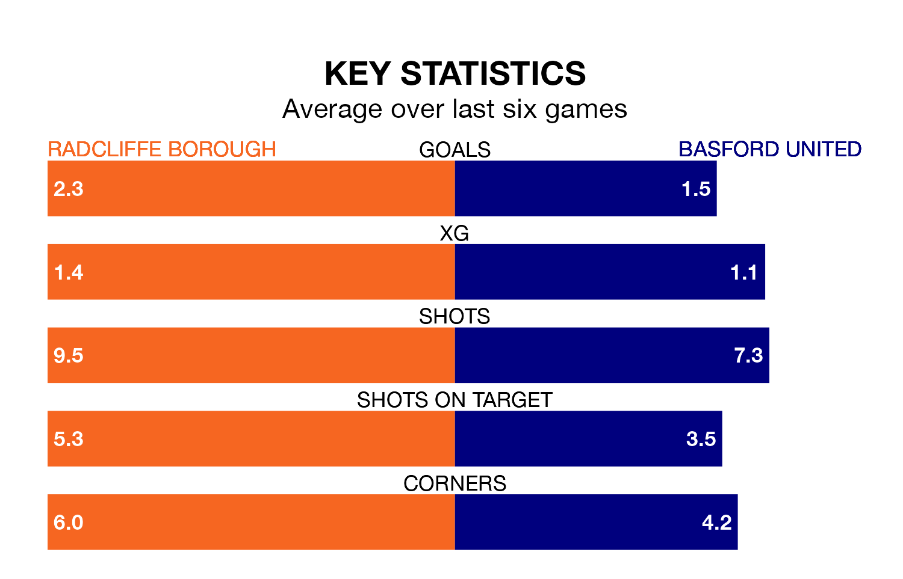

Radcliffe Borough host Basford United at the Stainton Park Stadium on Saturday on the back of three consecutive wins in the Northern Premier League.
Radcliffe have picked up 12 points from their last six games, and they face a Basford side who have lost their last two matches, and collected nine points from the last possible 18.
With 101 goals in 38 games so far this season, Radcliffe are the league's highest scorers with 2.7 goals per game. And they are conceding fewer than average, letting in 55 goals at a rate of 1.4 per game.
Basford, meanwhile, are below average scorers, with 1.0 goal per game, compared to a league average of 1.6. They have conceded 1.7 goals per game.
Borough are top of the table after 38 games, of which they have won 28 and drawn two, earning 86 points.
United are 17 places behind the Boro in 18th, with eight wins and nine draws putting them on 33 points.
In the last 10 years, Radcliffe and Basford have played each other on six occasions. Radcliffe won four of them and Basford two.
On average, the Boro scored 1.8 goals and Basford 1.0 in those matches.
Their last meeting was on January 16, when Radcliffe won 3-1 away.
Radcliffe's last match was on April 13, a 2-1 win against Whitby Town.
Basford lost 3-1 against Macclesfield last time out, also on April 13.
Updated: 11:31 (UTC), 15/04/24